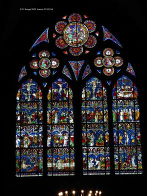
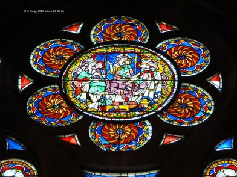
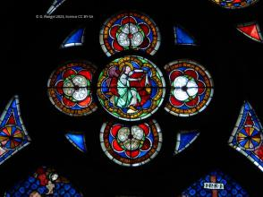
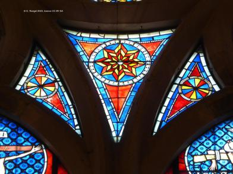

baie bas-sud-5 : Passion du Christ (CV1986, p. 228)
 : Vue d'ensemble (CV1986, p. 237).
: Vue d'ensemble (CV1986, p. 237). : Vue d'ensemble (CV1986, p. 237).
: Vue d'ensemble (CV1986, p. 237).-  : Vue d'ensemble (CV1986, p. 237).
- : Vue d'ensemble (CV1986, p. 237).
 : Rose centrale : la mort de la vierge (CV1986, p. 235).
: Rose centrale : la mort de la vierge (CV1986, p. 235).-  : Rose centrale : la mort de la Vierge (CV1986, p. 235).
 : Ange thuriféraire (CV1986, p. 238).
: Ange thuriféraire (CV1986, p. 238). : Ange thuriféraire (CV1986, p. 238).
: Ange thuriféraire (CV1986, p. 238). : Ange thuriféraire (CV1986, p. 238).
: Ange thuriféraire (CV1986, p. 238).- : Ange thuriféraire (CV1986, p. 238).
 : Ange thuriféraire (CV1986, p. 238).
: Ange thuriféraire (CV1986, p. 238).-  : Écoinçons centraux (CV1986, p. 238).
- : Écoinçons centraux (CV1986, p. 238).
- : Écoinçons centraux (CV1986, p. 238).
 : Écoinçons centraux (CV1986, p. 238).
: Écoinçons centraux (CV1986, p. 238).- : Écoinçon.
-  : Écoinçon.
- : Écoinçon.
 : Écoinçon.
: Écoinçon. : Lancette a) Le bon larron est crucifié (CV1986, p. 233-234).
: Lancette a) Le bon larron est crucifié (CV1986, p. 233-234). : Lancette a) Le couronnement d'épines (CV1986, p. 232-233).
: Lancette a) Le couronnement d'épines (CV1986, p. 232-233). : Lancette a) Le baiser de Judas (CV1986, p. 232).
: Lancette a) Le baiser de Judas (CV1986, p. 232). : Lancette a) L'entrée à Jérusalem (CV1986, p. 231).
: Lancette a) L'entrée à Jérusalem (CV1986, p. 231). : Lancette b) La crucifixion (CV1986, p. 234).
: Lancette b) La crucifixion (CV1986, p. 234). : Lancette b) Jésus devant Pilate (CV1986, p. 233).
: Lancette b) Jésus devant Pilate (CV1986, p. 233). : Lancette b) Le reniement de Saint Pierre et Jésus devant le grand prêtre Anne (CV1986, p. 232).
: Lancette b) Le reniement de Saint Pierre et Jésus devant le grand prêtre Anne (CV1986, p. 232).- : Lancette b) La cène (CV1986, p. 231).
 : Lancette c) Le mauvais larron est crucifié (CV1986, p. 234).
: Lancette c) Le mauvais larron est crucifié (CV1986, p. 234). : Lancette c) Le portement de croix (CV1986, p. 233).
: Lancette c) Le portement de croix (CV1986, p. 233).- : Lancette c) Jésus devant Caïphe (CV1986, p. 232).
 : Lancette c) Le lavement des pieds (CV1986, p. 231).
: Lancette c) Le lavement des pieds (CV1986, p. 231).- : Lancette d) La mise au tombeau (CV1986, p. 234).
- : Lancette d) On amène les deux larrons (CV1986, p. 233).
 : Lancette d) La flagellation (CV1986, p. 232).
: Lancette d) La flagellation (CV1986, p. 232). : Lancette d) Le jardin de Gethsémané (CV1986, p. 231-232).
: Lancette d) Le jardin de Gethsémané (CV1986, p. 231-232).
Copyright D. Roegel, 2023.
 : Vue d'ensemble (CV1986, p. 237).
: Vue d'ensemble (CV1986, p. 237). : Vue d'ensemble (CV1986, p. 237).
: Vue d'ensemble (CV1986, p. 237).{kind=link}
{kind=link}
 : Rose centrale : la mort de la vierge (CV1986, p. 235).
: Rose centrale : la mort de la vierge (CV1986, p. 235).{kind=link}
 : Ange thuriféraire (CV1986, p. 238).
: Ange thuriféraire (CV1986, p. 238). : Ange thuriféraire (CV1986, p. 238).
: Ange thuriféraire (CV1986, p. 238). : Ange thuriféraire (CV1986, p. 238).
: Ange thuriféraire (CV1986, p. 238).{kind=link}
 : Ange thuriféraire (CV1986, p. 238).
: Ange thuriféraire (CV1986, p. 238).{kind=link}
{kind=link}
{kind=link}
 : Écoinçons centraux (CV1986, p. 238).
: Écoinçons centraux (CV1986, p. 238).{kind=link}
{kind=link}
{kind=link}
 : Écoinçon.
: Écoinçon. : Lancette a) Le bon larron est crucifié (CV1986, p. 233-234).
: Lancette a) Le bon larron est crucifié (CV1986, p. 233-234). : Lancette a) Le couronnement d'épines (CV1986, p. 232-233).
: Lancette a) Le couronnement d'épines (CV1986, p. 232-233). : Lancette a) Le baiser de Judas (CV1986, p. 232).
: Lancette a) Le baiser de Judas (CV1986, p. 232). : Lancette a) L'entrée à Jérusalem (CV1986, p. 231).
: Lancette a) L'entrée à Jérusalem (CV1986, p. 231). : Lancette b) La crucifixion (CV1986, p. 234).
: Lancette b) La crucifixion (CV1986, p. 234). : Lancette b) Jésus devant Pilate (CV1986, p. 233).
: Lancette b) Jésus devant Pilate (CV1986, p. 233). : Lancette b) Le reniement de Saint Pierre et Jésus devant le grand prêtre Anne (CV1986, p. 232).
: Lancette b) Le reniement de Saint Pierre et Jésus devant le grand prêtre Anne (CV1986, p. 232).{kind=link}
 : Lancette c) Le mauvais larron est crucifié (CV1986, p. 234).
: Lancette c) Le mauvais larron est crucifié (CV1986, p. 234). : Lancette c) Le portement de croix (CV1986, p. 233).
: Lancette c) Le portement de croix (CV1986, p. 233).{kind=link}
 : Lancette c) Le lavement des pieds (CV1986, p. 231).
: Lancette c) Le lavement des pieds (CV1986, p. 231).{kind=link}
{kind=link}
 : Lancette d) La flagellation (CV1986, p. 232).
: Lancette d) La flagellation (CV1986, p. 232). : Lancette d) Le jardin de Gethsémané (CV1986, p. 231-232).
: Lancette d) Le jardin de Gethsémané (CV1986, p. 231-232).